| species | island | bill_length_mm | bill_depth_mm | flipper_length_mm | body_mass_g | sex | year |
|---|---|---|---|---|---|---|---|
| Adelie | Torgersen | 39.1 | 18.7 | 181 | 3750 | male | 2007 |
| Adelie | Torgersen | 39.5 | 17.4 | 186 | 3800 | female | 2007 |
| Adelie | Torgersen | 40.3 | 18.0 | 195 | 3250 | female | 2007 |
| Adelie | Torgersen | NA | NA | NA | NA | NA | 2007 |
| Adelie | Torgersen | 36.7 | 19.3 | 193 | 3450 | female | 2007 |
| Adelie | Torgersen | 39.3 | 20.6 | 190 | 3650 | male | 2007 |
3 Data viz
Intended Learning Outcomes
By the end of this chapter you should be able to:
- a
- b
- Be able to create an appropriate for your data
Individual Walkthrough
3.1 Building pots
We are using the package ggplot2 to create data visualisations. It’s part of the tidyverse package. Actually, most people call th package ggplot but it’s official name is ggplot2.
ggplot2 uses a layered grammar of graphics, in which plots are built up in a series of layers. You would start with a base layer (opening ggplot), adding data and aesthetics, and selecting the geometries for plot.
These first 3 layers will give you the most simple version of a complete plot, but you could add other layers to make the plots pretty by using scales, facets, coordinates, labels and themes.

To give you a brief overview of the layering system, let’s use the package palmerpenguins (https://allisonhorst.github.io/palmerpenguins/). It contains data about bill length and depth, flipper length, and body mass, etc.
Let’s build a basic scatterplot to show the relationship between flipper_length and body_mass. We will customise plots further later on in the individual plots. This is just a quick overview of the different layers.
- Layer 1 creates a plot base to built up upon.
- Layer 2 adds the
dataand someaesthetics- data is first argument
- aesthetics are added via the mapping argument. There you define your variables to be added (such as x, or x and y) and allows you specify overall properties like the colour of grouping variables etc.
- Layer 3 adds the geometries or
geom_?for short. This tells ggplot in which style we want to plot the data points. Remember to add these layers with a+rather than a pipe%>%. You can add multiple geoms if you wish, e.g., building a violin-boxplot - Layer 4 adds the
scale_?functions which can help you customise the aesthetics, such as changing colour. You can do much more with scales, but we’ll get to that later. - Layer 5 introduces
facets, such asfacet_wrap()which allows you to add another dimension to the data output by showing the relationship you are interested in for each level of a categorical variable. - Layer 6 - coordinates:
coord_cartesian()controls the limits for the x- and y-axes (argumentsxlimandylim). Changing those allows you to zoom in or out of your plot. - Layer 7 helps you to modify axes labels.
- Layer 8 controls the general style of a ggplot (e.g., background colour, size of text, borders, etc.). R comes with a few pre-defined ones (like
theme_classic,theme_bw,theme_minimal,theme_light).
Click on the tabs below to see how each layer contributes to refining the plot.

You won’t see any data points yet, because we haven’t specified how we want to display the data points. But we mapped in the aesthetics, that we want to plot variable body mass on the x-axis and flipper length on the y-axis. This also adds the axes titles and the values and break points of the axes.
Tip
You won’t need to add data = or mapping = if you keep those arguments in exactly that order. Likewise, the first column name you enter within the aes() function will always be interpreted as x, and the second as y, so you could omit them if you wish.
will give you the same output as the code above.
ggplot(data = penguins, mapping = aes(x=body_mass_g, y=flipper_length_mm, colour=sex)) +
geom_point()Warning: Removed 2 rows containing missing values or values outside the scale range
(`geom_point()`).
Here we are telling ggplot that we want a scatterplot added. There is a warning displayed showing that rows were removed because of missing values.
The argument colour adds colour to the points according to a grouping variable (in this case sex). If you want all of the points to be black (i.e. only represent 2 rather than 3 dimensions of the data), leave the colour argument out.
ggplot(data = penguins, mapping = aes(x=body_mass_g, y=flipper_length_mm, colour=sex)) +
geom_point() +
# changes colour palette
scale_colour_brewer(palette = "Dark2") +
# add breaks from 2500 to 6500 in increasing steps of 500
scale_x_continuous(breaks = seq(from = 2500, to = 6500, by = 500)) Warning: Removed 11 rows containing missing values or values outside the scale range
(`geom_point()`).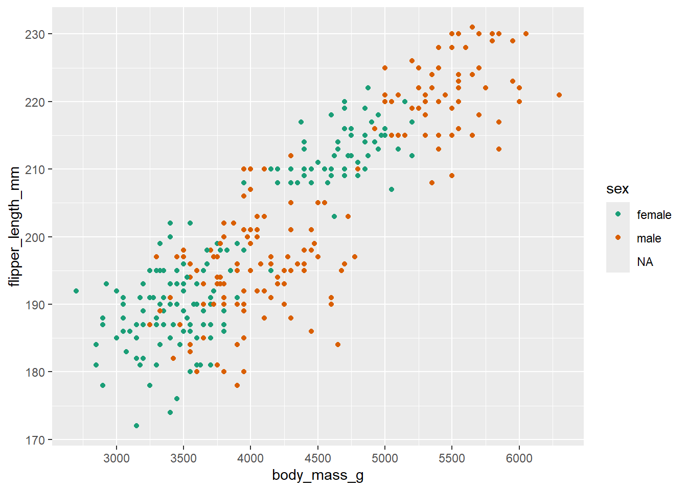
The scale_? functions allow us to change the colour palette of the plot or the axes breaks etc. You could change the name of the axis in scale_x_continuous() as well or leave it for Layer 7.
ggplot(data = penguins, mapping = aes(x=body_mass_g, y=flipper_length_mm, colour=sex)) +
geom_point() +
scale_colour_brewer(palette = "Dark2") +
# split main plot up into different subplots by species
facet_wrap(~ species) Warning: Removed 11 rows containing missing values or values outside the scale range
(`geom_point()`).
Here we are faceting this plot out for the individual species.
ggplot(data = penguins, mapping = aes(x=body_mass_g, y=flipper_length_mm, colour=sex)) +
geom_point() +
scale_colour_brewer(palette = "Dark2") +
facet_wrap(~ species) +
# limits the range of the y axis
coord_cartesian(ylim = c(0, 250)) Warning: Removed 11 rows containing missing values or values outside the scale range
(`geom_point()`).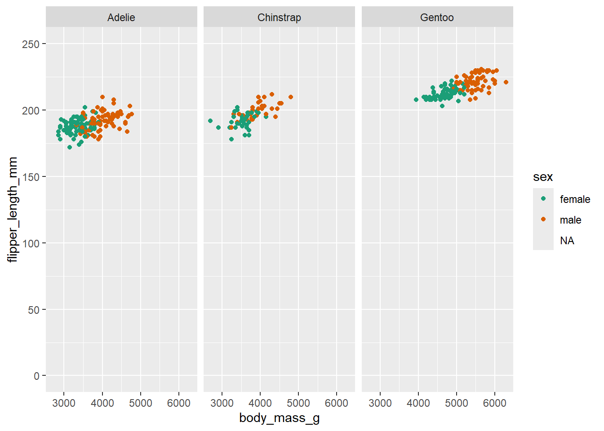
Changing the limits of the y axis to zoom in or out of the plot. If you wanted to the same for the x axis, you would add an argument xlim to the coord_cartesian() function.
ggplot(data = penguins, mapping = aes(x=body_mass_g, y=flipper_length_mm, colour=sex)) +
geom_point() +
scale_colour_brewer(palette = "Dark2") +
facet_wrap(~ species) +
labs(x = "Body Mass (in g)", # labels the x axis
y = "Flipper length (in mm)", # labels the y axis
colour = "Sex") # labels the grouping variable in the legendWarning: Removed 11 rows containing missing values or values outside the scale range
(`geom_point()`).
You can change the axes labels via the labs() function or include that step when modifying the scales (i.e. in the scale_x_continuous() function).
ggplot(data = penguins, mapping = aes(x=body_mass_g, y=flipper_length_mm, colour=sex)) +
geom_point() +
scale_colour_brewer(palette = "Dark2") +
facet_wrap(~ species) +
labs(x = "Body Mass (in g)",
y = "Flipper length (in mm)",
colour = "Sex") +
# add a theme
theme_classic()Warning: Removed 11 rows containing missing values or values outside the scale range
(`geom_point()`).
theme_classic() is applied to change the overall appearance of the plot.
Important
You need to stick to the first 3 layers to get your base plot. Everything else is optional meaning you don’t have to use all 8 layers in a plot. And layers 4-8 can be added in a random order whereas layers 1-3 are fixed.
3.2 Activity 1: Set-up
Ok, let’s move on to our data for today. But first, we need to set up a new project and create an Rmd:
- Create a new project and name it something meaningful (e.g., “2A_chapter3”, or “03_data_viz”). See Section 1.2 if you need some guidance.
- Create a new Rmd and save it to your project folder. Name it something meaningful (e.g., “chapter_03”, “03_data_viz.Rmd”). See Section 1.3 if you need some guidance.
- Delete everything below line 12 (keep the set-up code chunk)
3.3 Activity 2: Download the data
- Download the data for today: data_ch3. There are 2 csv files contained in the zip-folder you just downloaded. One is the data file (
hp_data_modified.csv) and the other is thequestionnaire_codebookfor the main 3 questionnaires used in the dataset. - Unzip the zip folder so that all data files, the Rmd and the project are in the same folder (see image below)
If you set it up correctly, your folder should look like this:


Info about the data
Citation
Jakob, L., Garcia-Garzon, E., Jarke, H., & Dablander, F. (2019). The Science Behind the Magic? The Relation of the Harry Potter “Sorting Hat Quiz” to Personality and Human Values. Collabra: Psychology, 5(1), 31. https://doi.org/10.1525/collabra.240
Abstract
The Harry Potter series describes the adventures of a boy and his peers in a fictional world at the “Hogwarts School of Witchcraft and Wizardry”. In the series, pupils get appointed to one of four groups (Houses) at the beginning of their education based on their personality traits. The author of the books has constructed an online questionnaire that allows fans to find out their House affiliation. Crysel, Cook, Schember, and Webster (2015) argued that being sorted into a particular Hogwarts House through the Sorting Hat Quiz is related to empirically established personality traits. We replicated their study while improving on sample size, methods, and analysis. Although our results are similar, effect sizes are small overall, which attenuates the claims by Crysel et al. The effect vanishes when restricting the analysis to participants who desired, but were not sorted into a particular House. On a theoretical level, we extend previous research by also analysing the relation of the Hogwarts Houses to Schwartz’s Basic Human Values but find only moderate or no relations.
Changes made to the dataset
- The dataset is a reduced version of the original dataset.
- The values in the IPIP 50 were turned into character responses
- All reverse-coded items were already corrected in the original dataset, so we reversed that process.
- The PVQ-RR has been revised repeatedly over the years (and is somewhat confusing tbh). To keep it simple, we opted to code the 57 items into a 12-value category structure as proposed by Giménez and Tamajón (2019; https://doi.org/10.1016/j.heliyon.2019.e01797). This is not in line with Jakob et al. (2019), who used a 10-value categorisation approach.
3.4 Activity 3: Load in the libraries and read in the data
Given the codebook is also in a csv format, you might want to read in the codebook as well. It might help us speed up data wrangling process.
Familiarise yourself with the data structure
As we said in Section 1.6, it is always recommended to glimpse at the data to see how many variables and observations there are in the dataset and what kind of data type they are.
Using glimpse to view the data. The output is pretty long, therefore it’s hidden. Click to see the output.
Rows: 988
Columns: 159
$ PP_ID <dbl> 1, 2, 3, 4, 5, 6, 7, 8, 9, 10, 11, 12, 13, 14, 15…
$ books <chr> "Harry Potter and the Philosopher's Stone,Harry P…
$ language_books <chr> "English", "German and English", "Both English an…
$ movies <chr> "Harry Potter and the Philosopher's Stone,Harry P…
$ language_movies <chr> "English", "German and English", "Both English an…
$ Sorting_completed_YN <chr> "Yes", "No", "Yes", "Yes", "Yes", "Yes", "No", "Y…
$ Sorting_house <chr> "Ravenclaw", "Gryffindor", "Gryffindor", "Slyther…
$ Sorting_house_wish <chr> "Ravenclaw", "Ravenclaw", "Ravenclaw", "Slytherin…
$ age <dbl> 21, 22, 27, 21, 20, 27, 26, 29, 23, 24, 25, 33, 2…
$ country <chr> "Germany", "Germany", "France", "Norway", "Chile"…
$ language <chr> "german", "German", "French", "Norwegian", "Spani…
$ occupation <chr> "Student", "Student", "Employed", "Student", "Stu…
$ gender <chr> "Female", "Female", "Female", "Male", "Female", "…
$ Bravery <chr> "Gryffindor", "Gryffindor", "Gryffindor", "Gryffi…
$ Hardwork <chr> "Ravenclaw", "Ravenclaw", "Hufflepuff", "Hufflepu…
$ Intelligence <chr> "Ravenclaw", "Ravenclaw", "Ravenclaw", "Ravenclaw…
$ Ambition <chr> "Slytherin", "Slytherin", "Slytherin", "Slytherin…
$ Daring <chr> "Gryffindor", "Hufflepuff", "Gryffindor", "Gryffi…
$ Dedication <chr> "Ravenclaw", "Slytherin", "Hufflepuff", "Hufflepu…
$ Knowledge <chr> "Ravenclaw", "Ravenclaw", "Ravenclaw", "Ravenclaw…
$ Cunning <chr> "Slytherin", "Hufflepuff", "Slytherin", "Slytheri…
$ Extraverted <chr> "Hufflepuff", "Hufflepuff", "Hufflepuff", "Gryffi…
$ Agreeable <chr> "Hufflepuff", "Gryffindor", "Hufflepuff", "Huffle…
$ Clever <chr> "Ravenclaw", "Ravenclaw", "Ravenclaw", "Ravenclaw…
$ Manipulative <chr> "Slytherin", "Slytherin", "Slytherin", "Slytherin…
$ IPIP_01 <chr> "moderately accurate", "neither accurate nor inac…
$ IPIP_02 <chr> "very inaccurate", "moderately accurate", "very i…
$ IPIP_03 <chr> "moderately inaccurate", "very accurate", "modera…
$ IPIP_04 <chr> "moderately inaccurate", "neither accurate nor in…
$ IPIP_05 <chr> "very accurate", "moderately accurate", "very acc…
$ IPIP_06 <chr> "moderately inaccurate", "neither accurate nor in…
$ IPIP_07 <chr> "very accurate", "moderately inaccurate", "very a…
$ IPIP_08 <chr> "moderately accurate", "very inaccurate", "modera…
$ IPIP_09 <chr> "moderately accurate", "neither accurate nor inac…
$ IPIP_10 <chr> "very inaccurate", "very inaccurate", "very inacc…
$ IPIP_11 <chr> "moderately accurate", "moderately inaccurate", "…
$ IPIP_12 <chr> "very inaccurate", "moderately inaccurate", "very…
$ IPIP_13 <chr> "neither accurate nor inaccurate", "very accurate…
$ IPIP_14 <chr> "very inaccurate", "moderately accurate", "modera…
$ IPIP_15 <chr> "moderately accurate", "neither accurate nor inac…
$ IPIP_16 <chr> "neither accurate nor inaccurate", "moderately in…
$ IPIP_17 <chr> "moderately accurate", "neither accurate nor inac…
$ IPIP_18 <chr> "moderately inaccurate", "moderately inaccurate",…
$ IPIP_19 <chr> "neither accurate nor inaccurate", "moderately in…
$ IPIP_20 <chr> "moderately inaccurate", "very inaccurate", "very…
$ IPIP_21 <chr> "very inaccurate", "moderately accurate", "modera…
$ IPIP_22 <chr> "moderately inaccurate", "moderately inaccurate",…
$ IPIP_23 <chr> "very inaccurate", "moderately inaccurate", "very…
$ IPIP_24 <chr> "neither accurate nor inaccurate", "moderately in…
$ IPIP_25 <chr> "moderately accurate", "very accurate", "moderate…
$ IPIP_26 <chr> "very inaccurate", "moderately inaccurate", "mode…
$ IPIP_27 <chr> "moderately inaccurate", "moderately accurate", "…
$ IPIP_28 <chr> "moderately accurate", "moderately accurate", "ve…
$ IPIP_29 <chr> "moderately inaccurate", "moderately accurate", "…
$ IPIP_30 <chr> "very inaccurate", "moderately inaccurate", "very…
$ IPIP_31 <chr> "very inaccurate", "moderately accurate", "modera…
$ IPIP_32 <chr> "moderately inaccurate", "moderately inaccurate",…
$ IPIP_33 <chr> "moderately inaccurate", "very accurate", "modera…
$ IPIP_34 <chr> "moderately inaccurate", "moderately inaccurate",…
$ IPIP_35 <chr> "moderately accurate", "moderately accurate", "mo…
$ IPIP_36 <chr> "moderately accurate", "moderately inaccurate", "…
$ IPIP_37 <chr> "moderately accurate", "moderately accurate", "mo…
$ IPIP_38 <chr> "neither accurate nor inaccurate", "moderately in…
$ IPIP_39 <chr> "very inaccurate", "moderately inaccurate", "neit…
$ IPIP_40 <chr> "moderately accurate", "moderately accurate", "ve…
$ IPIP_41 <chr> "moderately inaccurate", "moderately accurate", "…
$ IPIP_42 <chr> "moderately accurate", "neither accurate nor inac…
$ IPIP_43 <chr> "moderately inaccurate", "moderately inaccurate",…
$ IPIP_44 <chr> "moderately inaccurate", "moderately inaccurate",…
$ IPIP_45 <chr> "very accurate", "moderately accurate", "very acc…
$ IPIP_46 <chr> "very accurate", "moderately inaccurate", "neithe…
$ IPIP_47 <chr> "moderately inaccurate", "moderately accurate", "…
$ IPIP_48 <chr> "moderately inaccurate", "moderately accurate", "…
$ IPIP_49 <chr> "moderately inaccurate", "moderately inaccurate",…
$ IPIP_50 <chr> "moderately accurate", "moderately accurate", "ve…
$ SD_M1 <dbl> 3, 4, 3, 4, 2, 3, 3, 3, 4, 2, 4, 3, 4, 4, 3, 4, 4…
$ SD_M2 <dbl> 2, 3, 2, 5, 1, 2, 1, 2, 1, 2, 2, 4, 4, 4, 4, 2, 4…
$ SD_M3 <dbl> 2, 3, 1, 4, 2, 2, 2, 3, 3, 2, 4, 1, 3, 2, 3, 3, 2…
$ SD_M4 <dbl> 2, 2, 3, 4, 3, 3, 2, 4, 2, 2, 3, 4, 4, 4, 3, 2, 2…
$ SD_M5 <dbl> 2, 2, 1, 4, 2, 2, 1, 1, 1, 1, 2, 1, 4, 3, 2, 2, 3…
$ SD_M6 <dbl> 1, 3, 1, 5, 3, 3, 3, 4, 1, 2, 3, 1, 5, 1, 4, 3, 3…
$ SD_M7 <dbl> 3, 5, 4, 5, 2, 5, 4, 4, 5, 2, 3, 1, 5, 4, 4, 5, 5…
$ SD_M8 <dbl> 1, 3, 2, 2, 3, 1, 1, 3, 1, 2, 3, 1, 2, 1, 3, 1, 2…
$ SD_M9 <dbl> 4, 4, 2, 4, 1, 4, 2, 2, 1, 3, 3, 1, 4, 5, 4, 1, 3…
$ SD_N1 <dbl> 1, 3, 4, 4, 2, 3, 2, 1, 3, 3, 1, 1, 2, 2, 4, 3, 1…
$ SD_N2 <dbl> 4, 1, 3, 3, 2, 3, 4, 4, 5, 3, 5, 5, 4, 2, 2, 5, 4…
$ SD_N3 <dbl> 3, 2, 2, 2, 2, 2, 1, 3, 1, 1, 2, 1, 3, 2, 2, 1, 5…
$ SD_N4 <dbl> 2, 2, 2, 1, 2, 2, 2, 5, 2, 1, 3, 1, 3, 1, 4, 1, 2…
$ SD_N5 <dbl> 1, 2, 2, 4, 3, 2, 1, 4, 1, 3, 2, 1, 4, 2, 2, 1, 4…
$ SD_N6 <dbl> 4, 1, 2, 4, 4, 4, 2, 5, 5, 3, 3, 1, 4, 1, 3, 4, 2…
$ SD_N7 <dbl> 1, 3, 2, 3, 1, 1, 1, 4, 1, 3, 2, 1, 2, 4, 4, 1, 3…
$ SD_N8 <dbl> 4, 3, 3, 2, 4, 3, 3, 4, 3, 4, 4, 3, 2, 2, 2, 4, 1…
$ SD_N9 <dbl> 1, 4, 2, 4, 3, 2, 3, 2, 1, 4, 4, 1, 5, 2, 3, 3, 4…
$ SD_P1 <dbl> 1, 3, 2, 2, 1, 1, 1, 1, 1, 1, 3, 1, 3, 1, 4, 2, 2…
$ SD_P2 <dbl> 2, 3, 1, 4, 3, 4, 4, 4, 2, 2, 3, 3, 2, 2, 1, 3, 2…
$ SD_P3 <dbl> 1, 2, 1, 2, 1, 1, 1, 1, 1, 1, 2, 1, 2, 1, 4, 2, 1…
$ SD_P4 <dbl> 1, 2, 3, 2, 1, 1, 1, 1, 1, 1, 2, 1, 2, 2, 3, 1, 1…
$ SD_P5 <dbl> 3, 4, 1, 4, 1, 2, 3, 4, 1, 3, 2, 1, 4, 4, 3, 1, 1…
$ SD_P6 <dbl> 3, 3, 1, 4, 1, 2, 2, 2, 1, 1, 2, 1, 3, 1, 3, 2, 1…
$ SD_P7 <dbl> 5, 5, 4, 1, 5, 5, 5, 5, 5, 2, 5, 5, 2, 5, 2, 5, 2…
$ SD_P8 <dbl> 1, 1, 3, 2, 3, 2, 1, 3, 1, 2, 1, 1, 1, 1, 3, 3, 3…
$ SD_P9 <dbl> 1, 2, 1, 3, 1, 1, 1, 1, 1, 2, 2, 1, 1, 1, 2, 2, 4…
$ PVQ_01 <dbl> 5, 5, 5, 5, 6, 6, 4, 6, 4, 4, 5, 5, 5, 6, 6, 4, 6…
$ PVQ_02 <dbl> 2, 6, 2, 4, 5, 2, 4, 4, 2, 3, 4, 4, 6, 4, 4, 6, 6…
$ PVQ_03 <dbl> 4, 6, 3, 5, 6, 4, 4, 5, 3, 4, 5, 4, 5, 3, 4, 4, 3…
$ PVQ_04 <dbl> 2, 5, 4, 3, 3, 4, 5, 6, 5, 4, 5, 5, 4, 5, 4, 3, 2…
$ PVQ_05 <dbl> 5, 5, 4, 3, 5, 5, 5, 6, 4, 5, 6, 6, 6, 5, 3, 5, 4…
$ PVQ_06 <dbl> 1, 3, 2, 5, 3, 3, 2, 2, 1, 2, 2, 3, 3, 2, 3, 4, 4…
$ PVQ_07 <dbl> 5, 5, 5, 3, 4, 5, 4, 5, 6, 4, 4, 4, 2, 5, 3, 5, 1…
$ PVQ_08 <dbl> 3, 5, 4, 4, 6, 6, 3, 6, 2, 4, 6, 6, 3, 3, 2, 6, 3…
$ PVQ_09 <dbl> 4, 4, 5, 2, 3, 4, 4, 3, 5, 3, 5, 2, 5, 3, 3, 6, 3…
$ PVQ_10 <dbl> 4, 4, 6, 2, 5, 3, 4, 6, 4, 4, 5, 4, 4, 5, 6, 3, 5…
$ PVQ_11 <dbl> 3, 6, 6, 6, 6, 6, 5, 5, 6, 5, 5, 6, 6, 6, 5, 4, 4…
$ PVQ_12 <dbl> 1, 2, 1, 6, 2, 2, 2, 1, 1, 2, 3, 4, 3, 3, 1, 5, 3…
$ PVQ_13 <dbl> 3, 5, 3, 5, 4, 4, 5, 5, 2, 3, 4, 4, 5, 5, 3, 6, 4…
$ PVQ_14 <dbl> 5, 6, 5, 5, 6, 6, 6, 6, 4, 5, 6, 6, 6, 5, 6, 5, 4…
$ PVQ_15 <dbl> 2, 3, 2, 2, 3, 4, 3, 5, 6, 4, 3, 2, 2, 2, 2, 2, 3…
$ PVQ_16 <dbl> 4, 6, 5, 6, 6, 4, 5, 6, 5, 5, 5, 6, 6, 6, 6, 5, 5…
$ PVQ_17 <dbl> 4, 6, 5, 6, 6, 4, 4, 6, 6, 5, 4, 5, 5, 6, 4, 4, 5…
$ PVQ_18 <dbl> 1, 2, 2, 3, 2, 2, 2, 4, 1, 3, 2, 1, 1, 2, 2, 2, 4…
$ PVQ_19 <dbl> 4, 4, 5, 4, 5, 6, 6, 5, 5, 3, 4, 5, 5, 6, 6, 3, 5…
$ PVQ_20 <dbl> 1, 5, 1, 6, 2, 2, 2, 4, 1, 2, 3, 4, 5, 2, 2, 5, 4…
$ PVQ_21 <dbl> 2, 3, 3, 0, 5, 4, 1, 0, 2, 4, 5, 0, 4, 1, 3, 6, 1…
$ PVQ_22 <dbl> 5, 2, 3, 2, 2, 3, 3, 5, 6, 3, 4, 3, 4, 3, 2, 3, 1…
$ PVQ_23 <dbl> 4, 5, 6, 5, 6, 5, 4, 5, 5, 5, 5, 6, 6, 6, 6, 4, 4…
$ PVQ_24 <dbl> 2, 3, 2, 5, 2, 3, 4, 5, 4, 3, 3, 4, 5, 3, 3, 3, 4…
$ PVQ_25 <dbl> 5, 5, 6, 6, 6, 6, 5, 5, 5, 5, 4, 6, 5, 5, 5, 5, 4…
$ PVQ_26 <dbl> 3, 6, 3, 6, 4, 4, 5, 2, 1, 4, 5, 5, 6, 3, 5, 6, 4…
$ PVQ_27 <dbl> 5, 6, 6, 6, 5, 5, 6, 5, 5, 5, 5, 5, 5, 6, 5, 5, 2…
$ PVQ_28 <dbl> 3, 3, 6, 3, 5, 2, 2, 4, 4, 4, 5, 3, 4, 3, 6, 3, 2…
$ PVQ_29 <dbl> 1, 4, 2, 5, 2, 2, 1, 1, 1, 2, 3, 3, 4, 4, 5, 4, 4…
$ PVQ_30 <dbl> 3, 4, 5, 3, 5, 3, 4, 5, 4, 4, 5, 4, 5, 5, 4, 4, 5…
$ PVQ_31 <dbl> 1, 3, 2, 3, 2, 4, 2, 4, 6, 2, 4, 1, 2, 2, 4, 5, 4…
$ PVQ_32 <dbl> 4, 5, 3, 5, 5, 3, 3, 5, 5, 3, 4, 5, 5, 5, 5, 5, 5…
$ PVQ_33 <dbl> 1, 2, 2, 3, 4, 3, 2, 2, 2, 2, 1, 2, 1, 3, 1, 1, 3…
$ PVQ_34 <dbl> 4, 5, 6, 4, 6, 6, 5, 6, 5, 4, 5, 6, 6, 6, 5, 5, 5…
$ PVQ_35 <dbl> 1, 5, 2, 3, 4, 2, 2, 2, 1, 4, 3, 4, 5, 3, 2, 6, 5…
$ PVQ_36 <dbl> 5, 6, 4, 5, 6, 4, 5, 3, 3, 4, 4, 5, 5, 4, 5, 5, 5…
$ PVQ_37 <dbl> 5, 5, 4, 3, 6, 5, 5, 6, 4, 5, 5, 6, 6, 6, 5, 6, 6…
$ PVQ_38 <dbl> 5, 4, 5, 2, 5, 3, 6, 4, 6, 4, 5, 4, 4, 4, 3, 5, 4…
$ PVQ_39 <dbl> 4, 5, 5, 3, 6, 5, 4, 6, 6, 4, 5, 6, 5, 6, 6, 4, 6…
$ PVQ_40 <dbl> 1, 2, 2, 3, 3, 3, 2, 4, 1, 2, 2, 1, 2, 3, 1, 1, 4…
$ PVQ_41 <dbl> 2, 2, 2, 4, 2, 3, 1, 2, 1, 2, 2, 3, 4, 4, 4, 3, 3…
$ PVQ_42 <dbl> 1, 5, 2, 2, 2, 4, 4, 3, 6, 2, 2, 1, 2, 3, 2, 5, 2…
$ PVQ_43 <dbl> 5, 5, 5, 4, 6, 5, 4, 4, 5, 4, 3, 5, 5, 5, 5, 5, 6…
$ PVQ_44 <dbl> 1, 2, 1, 4, 2, 2, 1, 1, 1, 2, 1, 1, 3, 2, 1, 4, 1…
$ PVQ_45 <dbl> 2, 3, 4, 2, 5, 6, 2, 5, 2, 4, 6, 6, 5, 3, 3, 6, 3…
$ PVQ_46 <dbl> 4, 4, 3, 3, 6, 3, 3, 2, 3, 3, 4, 1, 4, 4, 5, 2, 3…
$ PVQ_47 <dbl> 3, 4, 5, 4, 5, 5, 4, 4, 5, 5, 4, 5, 4, 4, 5, 1, 2…
$ PVQ_48 <dbl> 4, 3, 5, 6, 4, 2, 2, 4, 6, 4, 4, 5, 6, 5, 5, 4, 4…
$ PVQ_49 <dbl> 4, 5, 5, 5, 3, 3, 2, 4, 6, 4, 4, 3, 5, 5, 4, 6, 3…
$ PVQ_50 <dbl> 3, 4, 2, 3, 4, 2, 2, 3, 1, 4, 4, 3, 3, 3, 1, 6, 3…
$ PVQ_51 <dbl> 5, 2, 2, 2, 3, 3, 3, 3, 6, 3, 4, 4, 3, 4, 3, 3, 3…
$ PVQ_52 <dbl> 4, 5, 4, 5, 6, 5, 5, 6, 4, 5, 5, 6, 5, 6, 3, 6, 4…
$ PVQ_53 <dbl> 2, 3, 2, 4, 3, 3, 3, 2, 2, 3, 4, 3, 3, 2, 1, 4, 4…
$ PVQ_54 <dbl> 3, 2, 3, 2, 3, 3, 4, 5, 4, 4, 4, 3, 3, 5, 5, 2, 3…
$ PVQ_55 <dbl> 5, 5, 5, 5, 5, 6, 5, 4, 5, 5, 4, 4, 5, 5, 4, 4, 4…
$ PVQ_56 <dbl> 4, 6, 5, 6, 6, 5, 5, 6, 5, 4, 5, 6, 5, 6, 6, 5, 4…
$ PVQ_57 <dbl> 4, 6, 5, 5, 5, 4, 4, 6, 4, 4, 4, 5, 5, 4, 4, 5, 4…3.5 Activity 4: Data wrangling
Before we can plot anything, we need to get the data into the right shape.
The data for the questionnaires looks fairly complex. It’s best to split it up into separate data objects to wrangle the questionnaire data. The next sections will wrangle the data separately for the
- IPIP 50 - International Personality Item Pool (Goldberg et al., 2006)
- SD 3 - Short Dark Triad (Jones & Paulhus, 2013)
- PVQ-RR - Portrait Values Questionnaire (Schwartz et al., 2012).
3.5.1 IPIP 50
Overall goal is to compute a score for each of the personality dimension (Agreeableness, Conscientiousness, Emotional Stability, Extraversion, Intellect) for each participant. So how do we do this?
First, check the data (data object and codebook). What is going on here? IPIP items are in data type and there is reverse-scoring for the IPIP items.
Step 1
Select the Participant id and the items of the IPIP.
Step 2
Next, items are in wide format which is not helpful. We need them in long format.
Step 3
Now, we need information which items are reverse-coded and modify how they are scored. We could code this ourselves like we did in [LINK TO DATA SECTION IN CHAPTER 2], or we could take a shortcut since the information is already stored in the codebook.
We won’t need all the info from codebook, so we need to select the relevant columns (Questionnaire_Item, Forward- or Reverse-coded item, Dimension) first before joining our hp_ipip with codebook_reduced. Retaining the Dimension will help later on with calculating scores for each subscale.
Notice how there are spaces in the variable name Forward- or Reverse-coded item which R has to wrap in single backticks to be able to process. Maybe better to change that variable name to FW_RV during selection so that it won’t give us a headache later on.
Now we can join those 2 dataframes together using left_join() or an inner_join(), which means only information for the IPIP items will be considered.
Error in `left_join()`:
! `by` must be supplied when `x` and `y` have no common variables.
ℹ Use `cross_join()` to perform a cross-join.Oh, an error message. Meh. It says x and y have no common variables. Ohhh, because when we pivoted hp_ipip, we named the column with the IPIP items IPIP_items whereas information in codebook_reduced is stored in a column called Questionnaire_Item. To fix that, we could either
- change the column name in
hp_ipipduring pivoting, i.e., settingnames_to = "Questionnaire_Item" - change the column name in
codebook_reducedduring selection of the variables, i.e.,select(IPIP_items = Questionnaire_Item, etc.)but that would only help us for IPIP items, not for the SD or the PVQ later on (so not really an option) - use a workaround and define the different column names in the “by” argument
hp_ipip_codebook <- left_join(hp_ipip, codebook_reduced, by = join_by(IPIP_items == Questionnaire_Item))
glimpse(hp_ipip_codebook)Rows: 49,400
Columns: 5
$ PP_ID <dbl> 1, 1, 1, 1, 1, 1, 1, 1, 1, 1, 1, 1, 1, 1, 1, 1, 1, 1, 1,…
$ IPIP_items <chr> "IPIP_01", "IPIP_02", "IPIP_03", "IPIP_04", "IPIP_05", "…
$ IPIP_response <chr> "moderately accurate", "very inaccurate", "moderately in…
$ FW_RV <chr> "Forward", "Reverse", "Forward", "Reverse", "Forward", "…
$ Dimension <chr> "Extraversion", "Agreeableness", "Conscientiousness", "E…Step 4
Now it’s getting tricky. Reverse-coding.
What we need to do is:
- turn the character values into numbers and
- make sure that we the correct those numbers for the reverse-coded items
hp_ipip_final <- hp_ipip_codebook %>%
# regardless of FW_RV item, we'll recode very inaccurate as 1, moderately inaccurate as 2, etc
mutate(IPIP_values = case_when(
IPIP_response == "very inaccurate" ~ 1,
IPIP_response == "moderately inaccurate" ~ 2,
IPIP_response == "neither accurate nor inaccurate" ~ 3,
IPIP_response == "moderately accurate" ~ 4,
IPIP_response == "very accurate" ~ 5,
.default = NA
)) %>%
# now we are reverse-scoring items. If it's a reverse coded item, we want the corrected score be 6 minus the IPIP_value
mutate(IPIP_values_corrected = case_when(
FW_RV == "Reverse" ~ 6-IPIP_values,
.default = IPIP_values
))
Check it worked
Alternative solution
We took 2 steps above to turn character into numeric values and recode those according to whether they were reverse -scored. However, we could have done this in one step:
hp_ipip_final_v2 <- hp_ipip_codebook %>%
mutate(IPIP_values_corrected = case_when(
IPIP_response == "very inaccurate" & FW_RV == "Forward" ~ 1,
IPIP_response == "moderately inaccurate" & FW_RV == "Forward" ~ 2,
IPIP_response == "moderately accurate" & FW_RV == "Forward" ~ 4,
IPIP_response == "very accurate" & FW_RV == "Forward" ~ 5,
IPIP_response == "neither accurate nor inaccurate" ~ 3, ## doesn't need to be recoded because 3 is 3 for both FW and RV items
IPIP_response == "very inaccurate" & FW_RV == "Reverse" ~ 5,
IPIP_response == "moderately inaccurate" & FW_RV == "Reverse" ~ 4,
IPIP_response == "moderately accurate" & FW_RV == "Reverse" ~ 2,
IPIP_response == "very accurate" & FW_RV == "Reverse" ~ 1,
.default = NA
))
distinct_values_v2 <- hp_ipip_final_v2 %>%
distinct(IPIP_response, FW_RV, IPIP_values_corrected) %>%
arrange(FW_RV, desc(IPIP_values_corrected))Step 5
According to the paper, the IPIP scores are getting summed up for each of the dimensions. And we need to do this per participant.
3.5.2 SD3
Overall goal for the SD3 questionnaire: We need to calculate an overall Score for the Dark Triad dimensions Psychopathy (lack of emotional warmth for others or empathy paired with sensation seeking, risk-taking behaviour, and lack of guilt), Machiavellianism (tendency to manipulate others for own gain), and Narcissism (exaggerated sense of grandiosity, importance, entitlement, and need to be admired) per participant.
First, check the data (data object and codebook). What is going on here? SD items are in data type and there is reverse-scoring for the SD items.
So how do we achieve that? Actually the steps are fairly similar to what we computed for the IPIP, apart from having to recode the values as numbers before being able to reverse-code them:
- Step 1: select PP_ID and all the questions related to the SD_questionnaires
- Step 2: pivot into long format
- Step 3: join with
codebook_reduced - Step 4: reverse_code the scores
- Step 5: calculate sums for each dimension
Keep to the separate steps if this is more organised for you easier to keep track, but we are attempting this in a single pipe. Keep the solution hidden if you want to challenge yourself.
Data Wrangling code for SD3
summary_SD <- hp_data %>%
select(PP_ID, starts_with("SD")) %>% # starts_with selects all column names that start with "SD"
pivot_longer(cols = -PP_ID, # all columns apart from PP_ID
names_to = "Questionnaire_Item", # smarter approach
values_to = "SD_response") %>%
left_join(codebook_reduced) %>% # now that the column names match across questionnaires, we don't need the by argument
mutate(SD_corrected = case_when(
FW_RV == "Reverse" ~ 6-SD_response,
.default = SD_response
)) %>%
group_by(PP_ID, Dimension) %>%
summarise(SD_score = sum(SD_corrected)) %>%
ungroup()Joining with `by = join_by(Questionnaire_Item)`
`summarise()` has grouped output by 'PP_ID'. You can override using the
`.groups` argument.3.5.3 PVQ-RR
Overall goal for the PVQ-RR questionnaire: We need to calculate an overall score for each of the 12 dimensions per participant.
First, check the data (data object and codebook). What is going on here? PVQ items are in data type and there is reverse-scoring for the SD items.
So how do we achieve that? Actually this is more straightforward than data wrangling for the IPIP and the SD. We basically have to:
- Step 1: select PP_ID and all the questions related to the PVQ_questionnaires
- Step 2: pivot into long format
- Step 3: join with
codebook_reduced - Step 4: calculate sums for each dimension
Similar to SD, we attempt this in a single pipe. Feel free to try first before looking at the solution below.
Data Wrangling code for PVQ-RR
summary_PVQ <- hp_data %>%
select(PP_ID, starts_with("PVQ")) %>% # starts_with selects all column names that start with "PVQ"
pivot_longer(cols = -PP_ID, # all columns apart from PP_ID
names_to = "Questionnaire_Item", # smarter approach
values_to = "PVQ_response") %>%
left_join(codebook_reduced) %>% # now that the column names match across questionnaires, we don't need the by argument
group_by(PP_ID, Dimension) %>%
summarise(PVQ_score = mean(PVQ_response)) %>%
ungroup()Joining with `by = join_by(Questionnaire_Item)`
`summarise()` has grouped output by 'PP_ID'. You can override using the
`.groups` argument.One thing though: The Dimension column has the name of the PVQ category but also the abbreviation in brackets. We might want to tidy that up now before we start plotting. We can use the separate() function for that.
3.6 Which plot is the appropriate plot???
Alright, let’s get started with data visualisation, now that we have the data in a tidy format. Question is now, which one is the right plot for your data?
Different types of data require different types of plots, so this comes back to how many variables are you aiming to plot and what kind of data type are they.
3.6.1 One categorical variable
3.6.1.1 Barchart (geom_bar())
Let’s say we want to count some demographics. To keep it simple, we want to show gender counts. We would use a barplot for it. This is done with geom_bar() in your third layer, and because the counting is done in the background, the aes only requires an x value (i.e. the name of your variable).
This is the base plot done. You can customise it again by adding different layers. Some examples are in the tabs below.
We can change the colour by adding a fill argument in the aes(). If we want to modify these colours further, we would add a scale_fill_? argument. If you have specific colours in mind, you would use scale_fill_manual() or if you want to stick with pre-dined ones, like viridis, use scale_fill_viridis_d()
Nothing too “off” in this case, but given Female and Male are capitalised, we may want to tidy the axes labels a bit. There is also this gap between bottom of the chart and the bars which seems a bit weird. We can remove that with an expansion() function.
ggplot(hp_data, aes(x = gender, fill = gender)) +
geom_bar() +
scale_fill_viridis_d() +
# changing labels v1 (with labs function, can add x and y)
labs(x = "Gender") +
scale_y_continuous(
# changing labels v2 (within the scale function, only deals with either x or y depending if it's scale_x or scale_y)
name = "Count",
# remove the space below the bars (first number), but keep a tiny bit (5%) above (second number)
expand = expansion(mult = c(0, 0.05))
)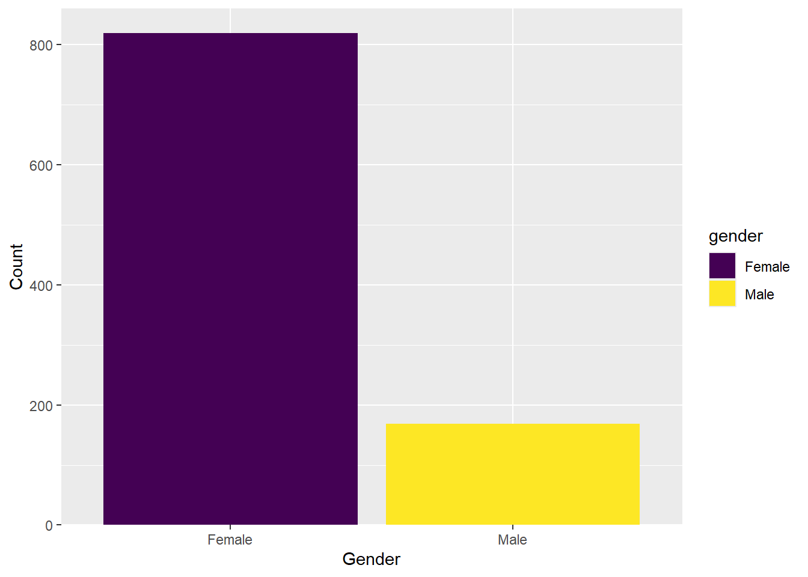
The legend does not add any information because the labels are already provided on the x axis. We can remove the legend by adding the argument guide = "none" into the scale_fill function.
Let’s experiment with the themes. For this plot we have chosen theme_minimal()
3.6.1.2 Column plot (geom_col())
If someone had already summarised those counts for you, you would not be able to use geom_bar(). In that case, you would switch to geom_col().
The mapping for geom_col() requires both an x and a y aesthetics. In our example, x would be our categorical variable (e.g., gender), and y would be the column name that stored the values (n). Note how the base version has now n as an axis title (instead of count).
Activity 5: Make the column plot pretty
The other layers to change the colour scheme, axes labels and margins, removing the legend and altering the theme require exactly the same functions as with the boxplot above. Test yourself to see if you could…
- change the colour scheme (e.g., viridis or any other colour palettes)
- remove the legend
- change the title of the x and y axes
- make the bars start directly on the x axis
- add a theme of your linking
Possible solution code for the column plot (with a different colour palette and a different theme)
ggplot(gender_count, aes(x = gender, y = n, fill = gender)) +
geom_col() +
# replaced vidiris with the brewer palette
scale_fill_brewer(
palette = "Set1", # try "Set2" or "Dark2" for some variety
guide = "none") + # legend removed
# changing both x and y in labs
labs(x = "Gender", y = "Count") +
scale_y_continuous(
# starts bars on x axis without any gaps but leaves some space at the top (this time 10%)
expand = expansion(mult = c(0, 0.1))
) +
# different theme
theme_light()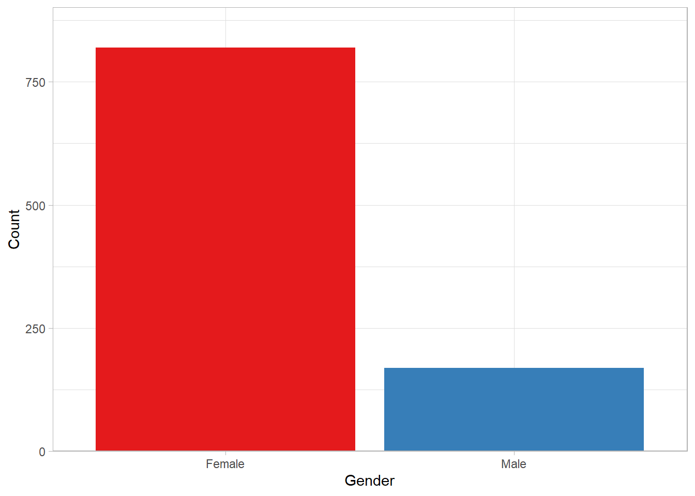
3.6.2 Two categorical variables
Lets have a look at the relationship between the houses participants being sorted into vs the house they wished they had been allocated to.
Pre-step: First, we’d need to wrangle the data a bit before we start building plots. When we look at the data, we see that a few people are actually managed to be sorted into more than one house. How is this even possible??? We only want those participants who only selected one house. Fortunately, all participants responded with one “wish” category, so nothing to fix there.
hp_houses <- hp_data %>%
select(PP_ID, Sorting_house, Sorting_house_wish) %>%
filter(Sorting_house %in% c("Gryffindor", "Hufflepuff", "Ravenclaw", "Slytherin"))
head(hp_houses)| PP_ID | Sorting_house | Sorting_house_wish |
|---|---|---|
| 1 | Ravenclaw | Ravenclaw |
| 2 | Gryffindor | Ravenclaw |
| 3 | Gryffindor | Ravenclaw |
| 4 | Slytherin | Slytherin |
| 5 | Slytherin | Hufflepuff |
| 6 | Ravenclaw | Ravenclaw |
One way to display that data is by creating a Stacked barchart (default option) or a Percent stacked barchart. For both options, the subgroups are displayed on top of each other. To show the two plots next to each other for better comparison, we moved the legend to the bottom of the chart and displayed the content across 2 rows.
## Stacked barchart
ggplot(hp_houses, aes(x = Sorting_house, fill = Sorting_house_wish)) +
geom_bar() + # no position argument added
theme(legend.position = "bottom") + # move legend to the bottom
guides(fill = guide_legend(nrow = 2)) # display across 2 rows
## Percent stacked barchart
ggplot(hp_houses, aes(x = Sorting_house, fill = Sorting_house_wish)) +
geom_bar(position = "fill") + # add position argument here
theme(legend.position = "bottom") + # move legend to the bottom
guides(fill = guide_legend(nrow = 2)) # display across 2 rows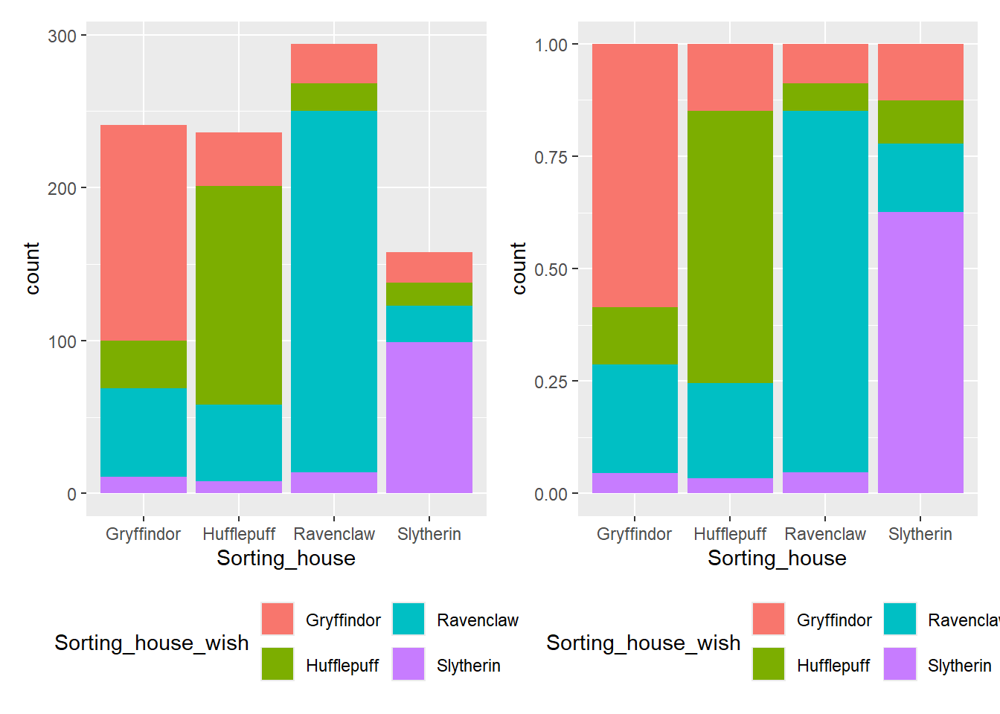
In the stacked barchart (Figure 3.3, left plot), you are able to plot participant numbers. Here we can see that hp_houses has a lot more participants who were sorted into Ravenclaw but also who wanted to be in Ravenclaw. We can also see that most participants were sorted into the houses they wished to be in, and that the lowest number of participants were sorted into Slytherin. However, we are having a tough time to see whether the ratio is the same across all 4 houses.
If we wanted to show that, a Percent stacked barchart (Figure 3.3, right plot) would make a lot more sense. Now we would be able to observe that a higher proportion of Ravenclaw-hopefuls actually ended up in Ravenclaw compared to Gryffindor-hopefuls, Hufflepuff-hopefuls, and Slytherin-hopefuls getting sorted into Gryffindor, Hufflepuff, and Slytherin respectively. BUT! We would lose the information about the raw values in the sample.
Note
The position argument position = "stack" is the default. Adding this argument to the code for the left plot in Figure 3.3 would produce the same plot a leaving the argument out.
A second option is a Grouped barchart which displays the bars next to each other. We would achieve that by changing the position argument to “dogde”. You can see the default version of the plot in the Figure 3.4 on the left, and one with more layers on the right.
Jakob et al. (2019) used the following HEX colours for their plots:
- Gryffindor #7F0909
- Hufflepuff #f0c75e
- Ravenclaw #08245e
- Slytherin #2a623d
## Default grouped barchart
ggplot(hp_houses, aes(x = Sorting_house, fill = Sorting_house_wish)) +
geom_bar(position = "dodge") + # add position argument here
theme(legend.position = "bottom") + # move legend to the bottom
guides(fill = guide_legend(nrow = 2)) # display across 2 rows
## Prettier grouped barchart
ggplot(hp_houses, aes(x = Sorting_house, fill = Sorting_house_wish)) +
geom_bar(position = "dodge") + # add position argument here
# changing colours to Harry Potter House colours
scale_fill_manual(values = c('#7F0909', '#f0c75e', '#08245e', '#2a623d')) +
# changing labels for x, y, and fill
labs(x = "House sorted into", y = "Count", fill = "House wished for") +
scale_y_continuous(
# remove the space below the bars, but keep a tiny bit (5%) above
expand = expansion(mult = c(0, 0.05))
) +
# pick a theme
theme_classic() +
theme(legend.position = "bottom") + # need to move this part to the end otherwise the `theme_*` overrides it
guides(fill = guide_legend(nrow = 2)) # display across 2 rows
One more thing we could have done is using facet_wrap() to split the different houses into their own subplots. Now we can compare better in which house participants were sorted into according to wish-houses categories. For example, people who have hoped for Gryffindor, were most likely sorted into Gryffindor, followed by Hufflepuff, Ravenclaw, and Slytherin. Slytherin-hopefuls were most likely to end up in Slytherin, followed by Ravenclaw, Gryffindor, and Hufflepuff.
ggplot(hp_houses, aes(x = Sorting_house, fill = Sorting_house_wish)) +
geom_bar(position = "dodge") +
scale_fill_manual(values = c('#7F0909', '#f0c75e', '#08245e', '#2a623d')) +
labs(x = "House sorted into", y = "Count", fill = "House wished for") +
scale_y_continuous(
# remove the space below the bars, but keep a tiny bit (5%) above
expand = expansion(mult = c(0, 0.05))
) +
# pick a theme
theme_classic() +
theme(legend.position = "bottom") + # need to move this part to the end otherwise the `theme_*` overrides it
facet_wrap(~Sorting_house_wish)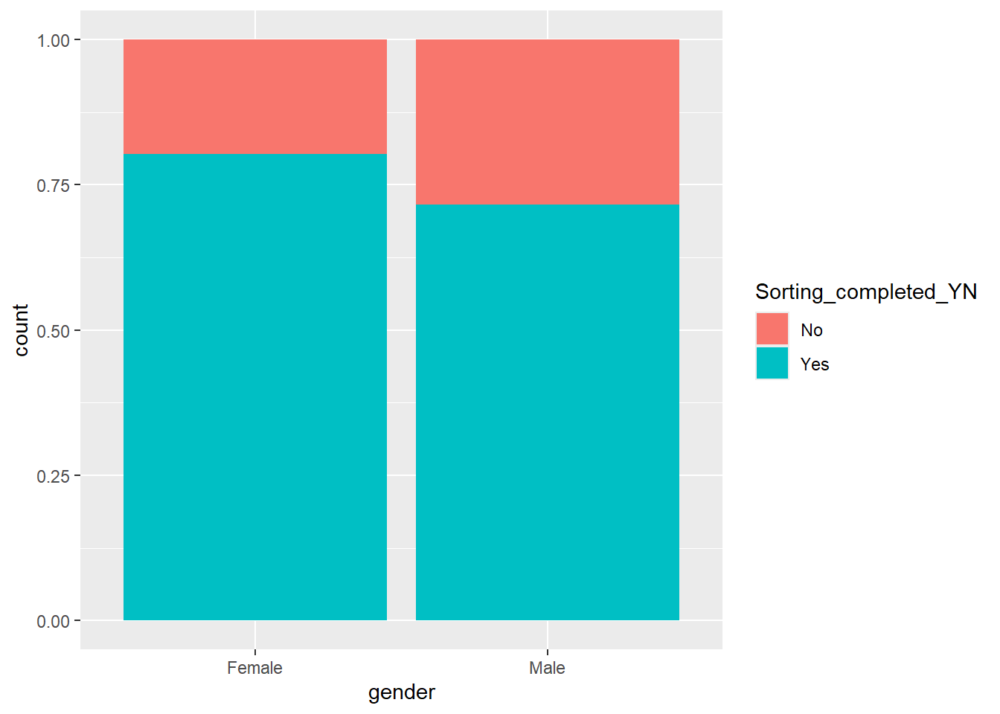
3.6.3 One continuous variable
3.6.3.1 Histogram geom_histogram()
If you wanted to show the distribution of a continuous variable, you can use a histogram. As with every plot, you need at least 3 layers to create a base version of the plot. Similar to geom_bar(), geom_histogram() only requires an x variable.
A histogram splits the data into “bins” (i.e., groupings displayed in a single bar). These values are plotted along the x-axis and shows the count of how many observations are in each bin along the y-axis. It’s basically a bar chart for continuous variables.
Let’s have a look at the age distribution in our dataset.
`stat_bin()` using `bins = 30`. Pick better value with `binwidth`.Warning: Removed 2 rows containing non-finite outside the scale range
(`stat_bin()`).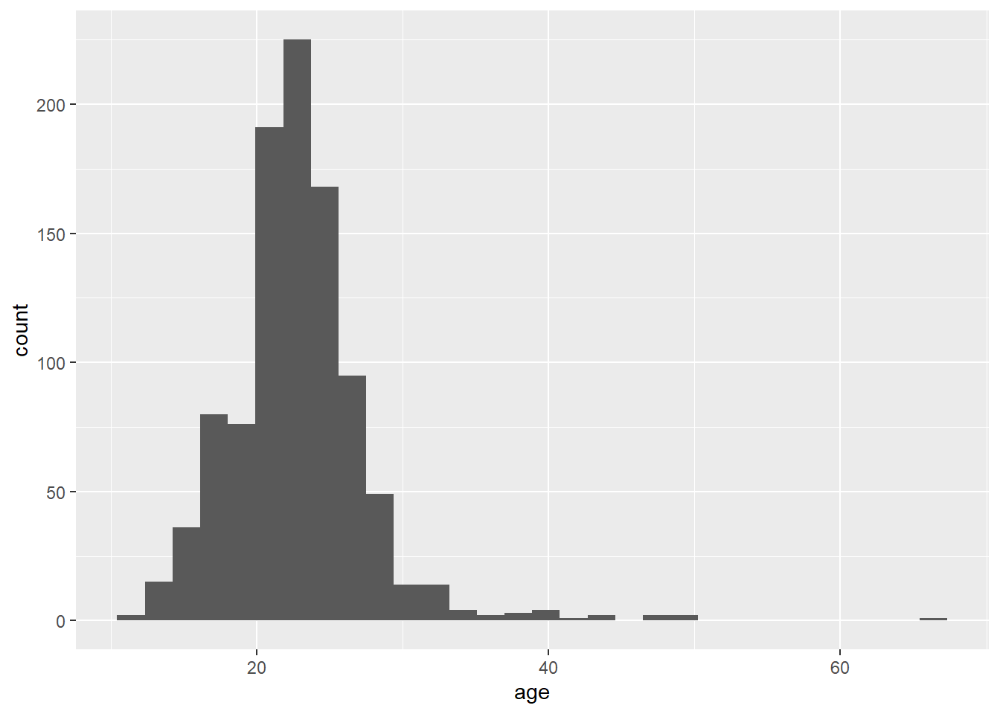
warning message
The warning message tell us that 2 rows were removed because they contained non-finite values outside the scale range. If you have a closer look at the data, you can spot those 2 rows as missing values.
The default bin number is 30 (as displayed in Figure 3.5 above). Changing the number of bins (argument bins) can help to show more or less fine tuning in the data. Bigger numbers of bins means more finetuning.
Perhaps it’s more intuitive to modify the width of each bin instead via the argument (binwidth). So for example binwidth = 1 for category age would mean 1 year of age per “age group”; binwidth = 5 would mean 5 years of age span per “age group”, etc. The plots below show modifications for both bin and binwidth.
Warning: Removed 2 rows containing non-finite outside the scale range (`stat_bin()`).
Removed 2 rows containing non-finite outside the scale range (`stat_bin()`).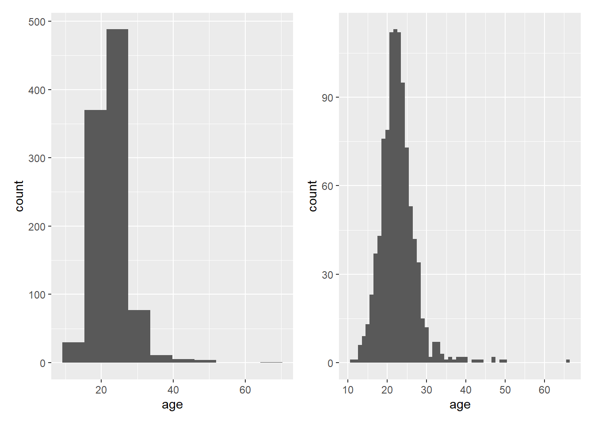
The warning message telling us 2 row of data were removed due to containing non-finite values outside the scale range. Have a look at the age column in hp_data to see if you can decipher the warning message.
They were removed because .
Colours are getting manipulated slightly differently to the barchart. Click through each tab to see how you can alter colour, axes labels, margins and breaks, and add a different theme.
We can change the plot colours by adding a fill argument and a colour argument. The fill argument manipulates the colour of the bars, and the colour argument changes the outline of the bars. Pay attention that they are added directly to the geom_histogram arguments, not the overall aes() like we did with the boxplot.
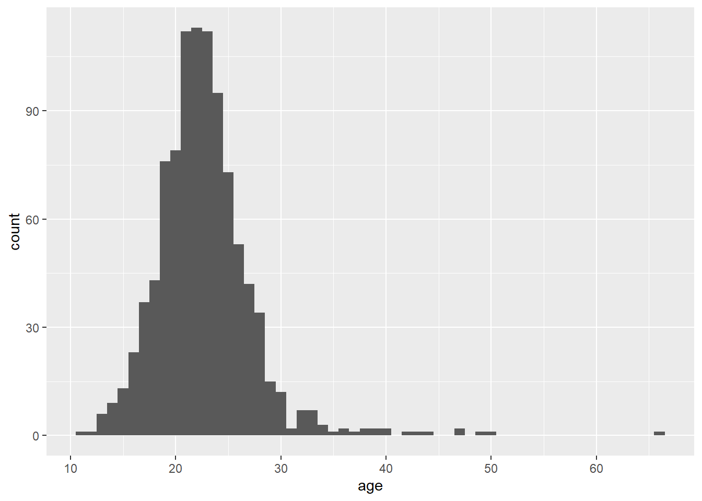
Tip
You could use hex codes for fill and color, like we used here, geom_histogram(binwidth = 1, fill = "#586cfd", colour = "#FC58BE"). If you want create your own colours, check out this website.
or
You could use a pre-defined colour name geom_histogram(binwidth = 1, fill = "purple", colour = "green"). See a full list here
Here we removed the label for the y axes (to show you some variety) and modified the breaks. The y axis is now displayed in increasing steps of 10 (rather than 30), and the x axis has 5-year increments rather than 10. The expansion() function works the same to the version we already encountered removing the gap between x axis and bars.
ggplot(hp_data, aes(x = age)) +
geom_histogram(binwidth = 1, fill = "#586cfd", colour = "#FC58BE") +
labs(x = "Age (in years)", # renaming x axis label
y = "") + # removing the y axis label
scale_y_continuous(
# remove the space below the bars (first number), but keep a tiny bit (5%) above (second number)
expand = expansion(mult = c(0, 0.05)),
# changing break points on y axis
breaks = seq(from = 0, to = 120, by = 10),
) +
scale_x_continuous(
# changing break points on x axis
breaks = seq(from = 10, to = 70, by = 5),
)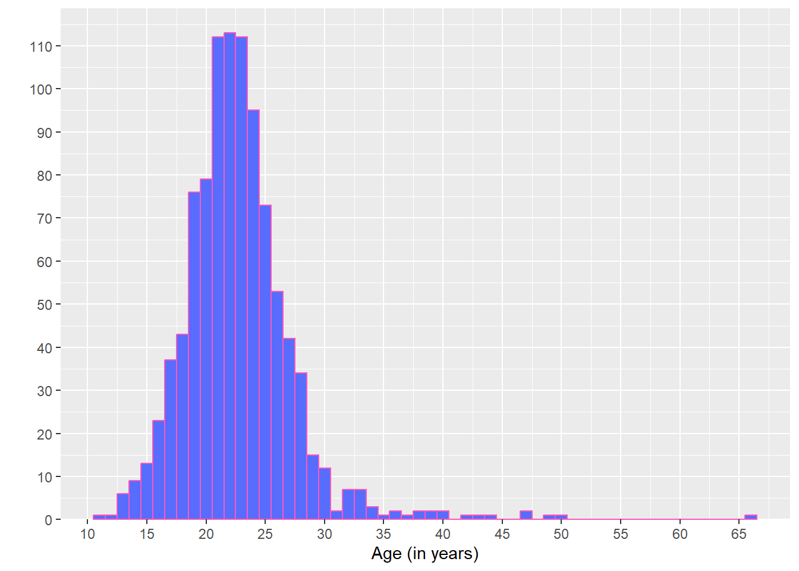
Let’s experiment with the themes. For this plot we have chosen theme_bw()
ggplot(hp_data, aes(x = age)) +
geom_histogram(binwidth = 1, fill = "#586cfd", colour = "#FC58BE") +
labs(x = "Age (in years)",
y = "") +
scale_y_continuous(
expand = expansion(mult = c(0, 0.05)),
breaks = seq(from = 0, to = 120, by = 10),
) +
scale_x_continuous(
breaks = seq(from = 10, to = 70, by = 5),
) +
# pick a theme
theme_bw()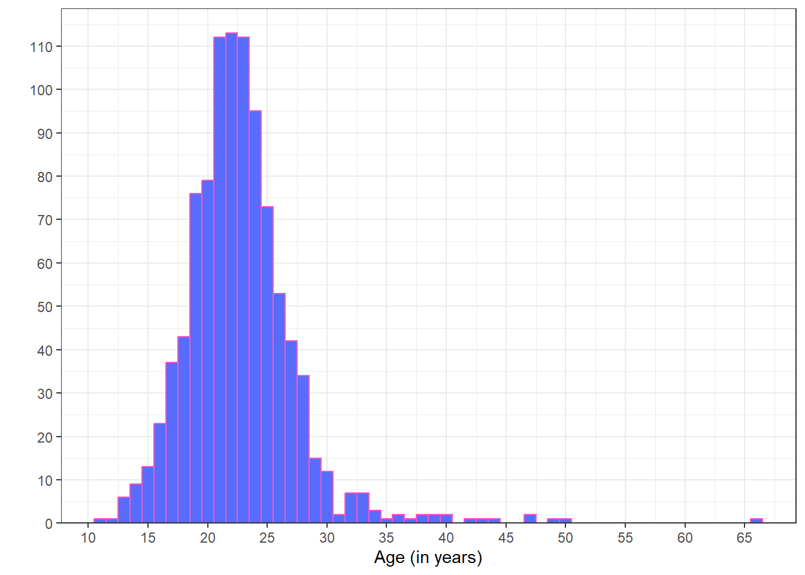
3.6.4 One continuous and one categorical grouping variable
3.6.4.1 Boxplot
Activity 6: Recreating a boxplot from Jakob et al. (2019)
Let’s try something different for the boxplot. Figure 1 in the paper shows a boxplot for the Personality traits across Houses. See below:
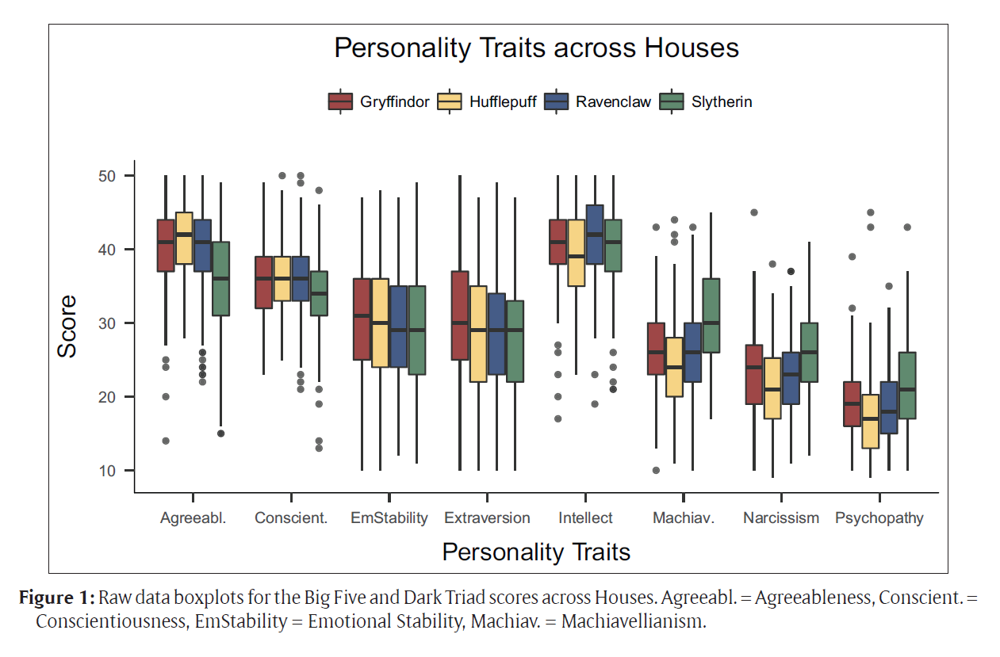
Let’s see if we can actually re-create this plot.
Step 1: create a default boxplot
Personality Traits is on the x axis and some sort of average Score is in the y axis. But hang on, They combined the Big 5 personality traits and the ones from the Dark Triads questionnaire. Hmmm. Our data doesn’t look like that yet. Our values are scattered across 3 different dataframes. The personality data we need are in summary_IPIP the Dark Triad data are in summary_SD, and the information about which house the participants got sorted into is in hp_data.
Pre-Steps
Try to wrangle the data according to the steps below before looking at the solution.
- We need information of the participant and which house they were sorted into. Think about where we would find the information and how to isolate it. Tidy that data up. Remember, there were participants who were sorted into more than one house, and we need to filter them out again.
- combine the data from
summary_IPIPandsummary_SD. Think about what join to use to keep information from both dataframes. After this step, we should have 3 columns and 8 scores per participant. (hint: pay attention to the Score column names in both dataframes - this can be addressed in a variety of ways) - We need to merge the output from 2. with the demographics we extracted in step 1.
- We also need to change one of the column names to “Score” if you have not addressed this in a previous step
- Drop missing values
Solution to the data wrangling steps
Are you sure you want to reveal the solution?
# 1. select PP_ID and selected_house from hp_data
demog <- hp_data %>%
select(PP_ID, Sorting_house) %>%
# use filter to focus on the people who selected 1 house only
filter(Sorting_house %in% c("Gryffindor", "Hufflepuff", "Ravenclaw", "Slytherin"))
# 2. combine the data from summary_IPIP and summary_SD
personality <- full_join(summary_IPIP, summary_SD, by = join_by(PP_ID, Dimension, IPIP_score == SD_score)) %>%
# 3. merge personality with demog
full_join(demog) %>%
# 4. change column name to Score
rename(Score = IPIP_score) %>%
# 5. drop NA
drop_na()Joining with `by = join_by(PP_ID)`Now we can start out default boxplot
Step 2: change the colours
We are still using the Hex colours defined by the Jakob et al. (2019).
Step 3: the colours look too strong, and legend is in the wrong position and does not want a category label
- To mute the colours slightly, we can define alpha within the
geom_boxplot()making the plot colours more transparent. This took a bit of trial and error, but I think we are good with an alpha value of around .75 (or at least one my screen).
Step 4: Remove grey background, the x axis needs attention and they have a plot title included
Looks like theme_classic() to me. Remember we have to add theme_classic() before moving the legend.position, otherwise the legend will be back on the right.
The x axis has the wrong label and we need to replace some of the names as they are too long and the original authors abbreviated them. Relabelling the x axis title should be straightforward by now.
But what about the labels of the categories? Here, we can just add an argument to scale_x_discrete() that relabels the categories. This is all working because they are ordered alphabetically. For orders that you want to have displayed non-alphabetically, you might need to change the character variable into a factor in the data frame and re-order the labels there before plotting [add cross-ref for chapter 2].
ggplot(data = personality, aes(x = Dimension, y = Score, fill = Sorting_house)) +
geom_boxplot(alpha = 0.7) + # add alpha here
scale_fill_manual(values = c('#7F0909', '#f0c75e', '#08245e', '#2a623d'),
name = "") + # delete the fill variable's title
scale_x_discrete(name = "Personality Traits",
labels = c("Agreeabl.", "Conscient.", "EmStability", "Extraversion", "Intellect", "Machiav.", "Narcissism", "Psychopathy")) +
ggtitle("Personality Traits across Houses") +
theme_classic() + # remove grey background
theme(legend.position = "top",
plot.title = element_text(hjust = 0.5)) # centers the title (took quite a bit of digging how to do that)
Looks about right.Maybe the outlier points are a bit bigger in the original plot, but I think we can let that slide.
3.6.4.2 Violin-boxplots
rewrite: PVQ data by categories and for faceting, merge with demog so we get the information about the houses participants were sorted into. We already created demog in one of the steps above, so we can reuse it straight away to join house information onto summary_PVQ
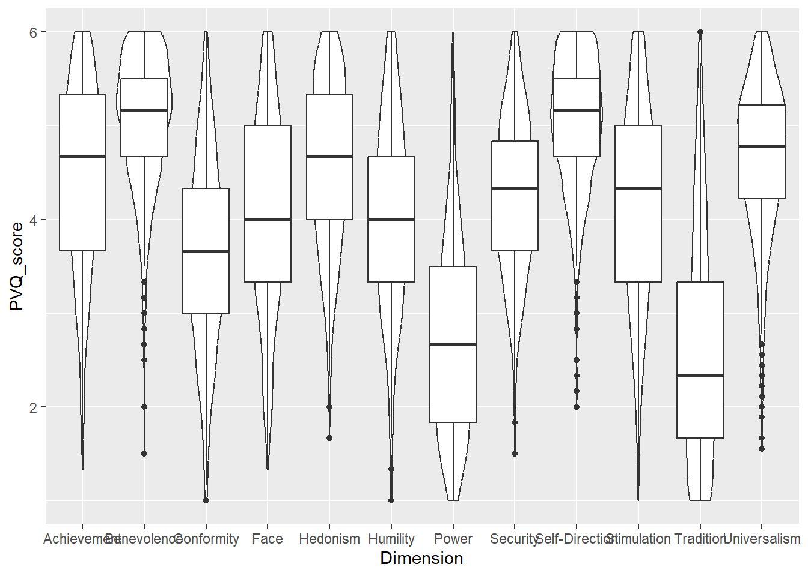
Let’s see if we can make this plot pretty. We could
- change the colour
- change the width of the boxes. at the moment they are covering the violins
- change the axes labels
- change the breaks on the y axis
- set the limits on the y axis from 0 to 6
- dodge the axis labels on the x axis so they so they don’t overlap
- change the theme to classic
ggplot(data = summary_PVQ, aes(x = Dimension, y = PVQ_score, fill = Dimension)) +
geom_violin(alpha = 0.5) + # alpha changes transparency
geom_boxplot(width = 0.25) + # change the width of the boxes
scale_fill_viridis_d(guide = "none", # remove the legend
option = "plasma") + # changes colour scheme to viridis option plasma
scale_y_continuous(name = "PVQ Score", # change y axis label
breaks = seq(from = 0, to = 6, by = 1), # change the breaks ticks on the y axis
limits = c(0, 6)) + # min = 0, max = 6
scale_x_discrete(name = "Human Values",
guide = guide_axis(n.dodge = 2)) + # want display labels in 2 rows
theme_classic()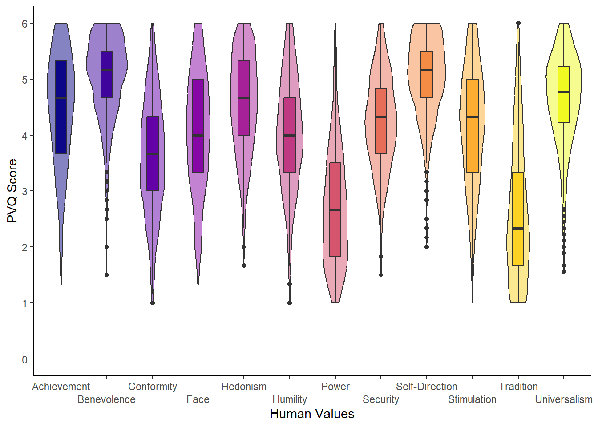
If we wanted to add another grouping variable to the mix, for example, Sorting_house, we can use facet_wrap() to create a separate plot for each level of variable we are separating by (in this case Dimension). For clarity, we should …
- re-define
x = Sorting_house - change the fill variable - it makes more sense to have Sorting_house there
- adjust the x axis label
… so our plot shows a better comparison how the 4 houses compare for each human value dimension.
ggplot(data = summary_PVQ, aes(x = Sorting_house, y = PVQ_score, fill = Sorting_house)) +
geom_violin(alpha = 0.5) + # alpha changes transparency
geom_boxplot(width = 0.25) + # change the width of the boxes
scale_fill_viridis_d(guide = "none", # remove the legend
option = "plasma") + # changes colour scheme to viridis option plasma
scale_y_continuous(name = "PVQ Score", # change y axis label
breaks = seq(from = 0, to = 6, by = 1), # change the breaks ticks on the y axis
limits = c(0, 6)) + # min = 0, max = 6
scale_x_discrete(name = "Houses sorted into",
guide = guide_axis(n.dodge = 2)) + # want display labels in 2 rows
theme_classic() +
facet_wrap(~ Dimension) + # I want them in all on an individual rows otherwise their labels overlap again
theme(legend.position = "bottom") # move legend to the bottom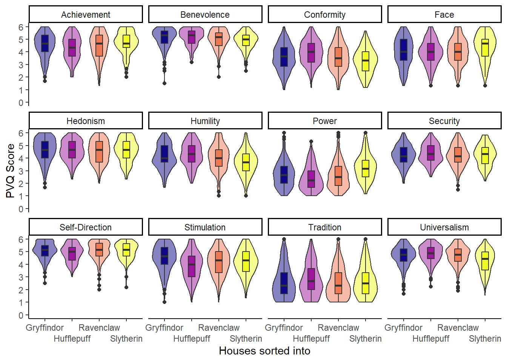
3.6.5 Two continuous
scatterplot
trendlines straight line vs loess
3.7 Save your plots
You can save your figures with the function ggsave(). It will save to your project folder
There are two ways you can use ggsave(). If you don’t tell ggsave() which plot you want to save, by default it will save the last plot you created. If you have followed the steps above, your last plot would be the scatterplot from ?fig-scatter
The second option is to save a plot as an object. As an example, let’s save the boxplot we recreated from Jakob et al. (2019) above (Figure 3.7) as an object called recreated_boxplot.
recreated_boxplot <- ggplot(data = personality, aes(x = Dimension, y = Score, fill = Sorting_house)) +
geom_boxplot(alpha = 0.7) + # add alpha here
scale_fill_manual(values = c('#7F0909', '#f0c75e', '#08245e', '#2a623d'),
name = "") + # delete the fill variable's title
scale_x_discrete(name = "Personality Traits",
labels = c("Agreeabl.", "Conscient.", "EmStability", "Extraversion", "Intellect", "Machiav.", "Narcissism", "Psychopathy")) +
ggtitle("Personality Traits across Houses") +
theme_classic() + # remove grey background
theme(legend.position = "top",
plot.title = element_text(hjust = 0.5)) # centers the title (took quite a bit of digging how to do that)Then you run the line
Filename is the name you want your png to be called, plot refers to the object name.
Our saved
recreated_boxplot.png would look like this:
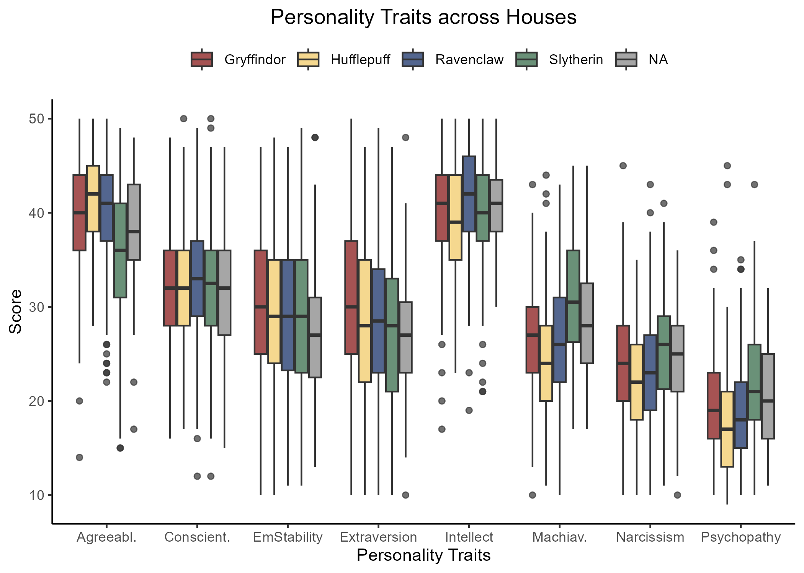
That is with default settings. If you like it, keep it, but if you think it looks a bit “stretched”, you can specify the width, the height, and the units (e.g., “cm”, “mm”, “in”, “px” are possible). You might need to play about with the dimension before it feels right.
png with different dimensions
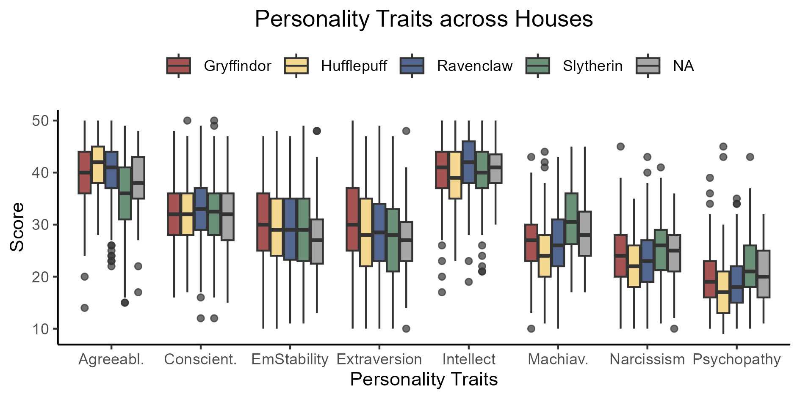
Pair-coding in the lab
Provide a barchart, a violin-boxplot, and a scatterplot from the loneliness data and the students have to try and recreate one of those in the lab. If they are overly fast, they can do the other 2.
Test your knowledge
Which plot would you choose for